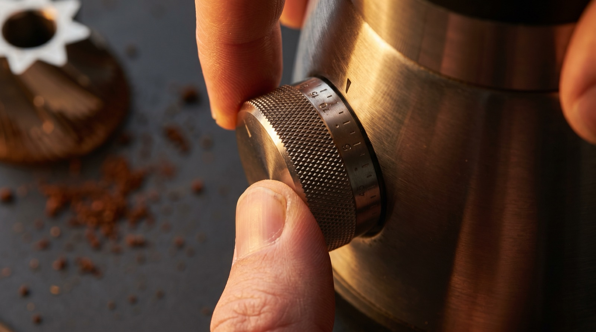
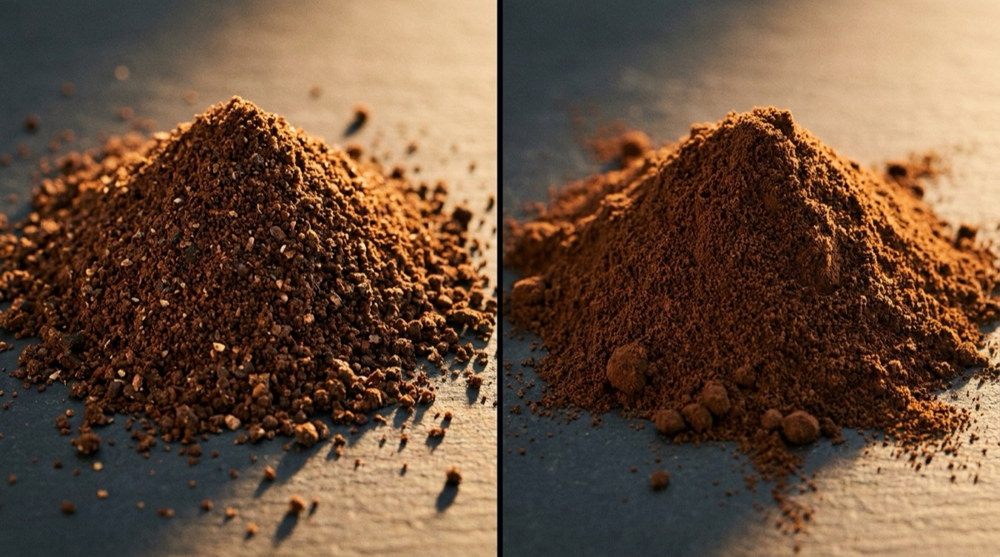

Espresso grinder settings: how to find your sweet spot.

There is no universal "espresso grind setting". There can't be. Every grinder reads its burrs with a different scale — some use clicks, some use numbers, some use rotations plus clicks, some are stepless and read nothing at all. A "12" on a Niche Zero is not a "12" on a Eureka Mignon, and neither is anywhere near a "2.5" on a 1Zpresso J-Max. Any blog post that gives you a single magic number is either bad or has a specific grinder in mind that isn't yours.
What does generalise is the process of dialling your grinder in: learning what your grinder's scale means, understanding how small a "step" really is, and using a repeatable workflow to land on a working setting in three shots or fewer. That's what this article is about.
Every grinder has its own language
Before you adjust anything, you need to know what your grinder's scale represents. Four common patterns:
Stepped numeric (Eureka Mignon, Baratza Sette, Niche Zero)
Each detent is a discrete step. The numbers on the collar go from "fine" to "coarse" but the absolute value is meaningless across grinders. The Mignon Specialità's 1 is not the Niche's 1. Treat your grinder's scale as an internal reference only.
Click-based (1Zpresso, Comandante, Timemore)
Clicks count rotations of the adjustment ring. 1Zpresso often publishes a "0 reference" you zero the grinder to (burrs touching), then count clicks from there. A 1Zpresso J-Max might need 2.0 rotations (2.0.0 in 1Zpresso's rotation.number.click notation) for espresso. A Comandante C40 typically lives around 10–16 clicks for espresso, though the C40 is really a pour-over grinder and espresso is a stretch.
Rotation + click (Timemore Sculptor, some 1Zpressos)
A hybrid — full rotations count, then clicks within a rotation. "2.3.5" means 2 full rotations plus 3 smaller divisions plus 5 clicks. Precise but hard to remember. Write your starting settings down.
Stepless (DF64, Mazzer Super Jolly, most commercial grinders)
Continuous adjustment, no stops. You're reading a pointer against an arbitrary scale on the collar. The best advice we have: pick a reference mark (e.g. the seam on the collar) and count notional "clicks" as degrees of rotation. Mark your working setting with a silver pen.
Starting settings for common grinders
These are approximate starting points for a modern medium-roast specialty coffee, 18 g in, 36 g out. They are where to begin dialling, not where to land.
| Grinder | Starting setting | Notes |
|---|---|---|
| Niche Zero | 10–14 | Tight range. Medium-fine for most coffees. |
| Eureka Mignon Specialità | 2–5 (stepless) | Lower = finer. Stepless — note the pointer position. |
| Baratza Sette 270 / 270W | 3–8 (macro) / fine-tune micro | Macro sets the zone; micro fine-tunes. |
| 1Zpresso J-Max | 1.6.0–2.0.0 (rotation.click) | Zero to burrs touching before you count. |
| 1Zpresso K-Ultra | 2.2–2.8 clicks from zero | Widely compatible; great for espresso too. |
| DF64 / DF64 Gen 2 | 1.5–2.5 (stepless) | Zero to chirp, count from there. |
| Mahlkönig X54 Home | 2.0–3.5 | Digital, stepless. Finer than first user thinks. |
| Sage Barista Express (integrated) | 7–12 (of 30) | Integrated grinder, limited range. |
These assume you have a freshly-zeroed grinder. If you haven't zeroed since you bought it, see the calibration section below before trusting any number.

How to calibrate your grinder for espresso
"Calibration" for a coffee grinder means zeroing the burrs — setting a known reference point so the numbers on the collar mean something consistent. Most grinders ship with calibration slightly off from factory. It's worth doing once, then writing the new zero down.
The universal technique:
- Empty the hopper and grinding chamber. No beans, no grounds anywhere in the path.
- Run the grinder with no beans at your current finest setting. Listen.
- Slowly adjust finer until the burrs just begin to touch — you'll hear a soft chirp or scraping. Stop immediately. This is zero.
- Note or mark this position. On a stepped grinder, mark the collar at this point. On a 1Zpresso, this is your 0.0.0.
- Back off 3–5 clicks/degrees from zero. This is your practical minimum — finer than this and you'll stall the motor.
- Go coarser 5–8 more clicks to a reasonable espresso starting point. Add beans and pull a shot.
If your grinder is direct-drive (Niche Zero, some stepped grinders), never force it finer than the chirp point. You'll damage the burrs or the motor. If it's a geared motor (most commercial-style grinders) the motor will stall before burrs touch — less dangerous but still worth respecting.
The one-click rule
Change one click at a time. Pull a shot. Taste. Adjust one more click. Repeat.
The most common mistake we see home baristas make is moving the grinder in huge steps. "This shot was a bit bitter, let me go much coarser" and suddenly it's three clicks away from where it should be and sour. Move one click. Pull a shot. Taste.
On a 1Zpresso-type grinder, one click is tiny — a fraction of a millimetre of burr gap. That tiny change is often the difference between 28 seconds and 32 seconds of extraction, and between a balanced shot and a flat one.
On a Niche, "one click" is bigger. You'll notice the difference between 10 and 11 clearly. On an Eureka Mignon Specialità (stepless), one click is whatever you define — we'd suggest a single degree of rotation as your standard unit, or a 0.1 on the digital display.
When to change grind (and when to blame something else)
Grind is the biggest lever but it's not the only one. Before you start chasing the perfect grind setting, rule out these causes of a bad shot:
- Dose drift. Are you actually dosing 18.0 g every shot, or is it floating between 17.5 and 18.7? That variation looks identical to a grind problem.
- Distribution. Clumpy or unevenly distributed grounds channel. A WDT tool (weed-whacker) fixes most distribution problems cheaply.
- Tamp level. A tilted tamp makes the flow path asymmetric. A calibrated tamper that gives a consistent 30 lb of force per shot removes this variable.
- Water temperature. Your machine may be running hot or cold if it's been sitting. Pull a blank shot to stabilise the group head.
- Bean freshness. A coffee that's 35 days post-roast pulls differently from the same bean at 10 days. It's not the grinder; the bean has changed.
If all of those are stable and the shot is still wrong, THEN it's a grind problem.
Retention and why the first shot is always wrong
Every grinder retains some grounds inside the burrs and chute between doses. When you change grind setting, those retained grounds are still at the OLD setting. The first shot after a grind adjustment is always a mix of old-setting and new-setting grounds.
The workaround: purge before the first shot. Grind 1–2 g of the same bean at the new setting, discard it, then dose your real shot. This flushes the retained grounds and gives you a clean read on the new setting.
On low-retention grinders (Niche Zero, DF64 with mods), the purge is basically optional. On high-retention grinders (older Eureka, Sage Barista Express's integrated) it's genuinely necessary.
Your grinder, already dialled in.
Extraction ships with 157 grinders backfilled — native scale, burr type, and recommended settings per brew method. The grind dial opens with your sweet-spot arc pre-lit.
Download on the App StoreFrequently asked questions
Fine enough that a 1:2 shot pulls in 25–32 seconds. The exact number depends on your grinder. Use the starting settings above as a first guess, then nudge one click at a time.
Gushing means the grind is far too coarse. Go finer by 3–4 clicks at once (this is one of the few times a bigger step is right), then purge and re-pull. If it's still fast, finer again.
Choking (no flow, or drops at 40+ seconds) means too fine or too high a dose. First check your dose is correct. Then go coarser 2–3 clicks, purge, re-pull.
No, but it helps. Grinders sold as "espresso" have fine-stepped or stepless adjustment at the fine end of the scale. Many pour-over grinders (Comandante, Kingrinder K6) can technically do espresso but have huge step sizes down there, making dialling in painful.